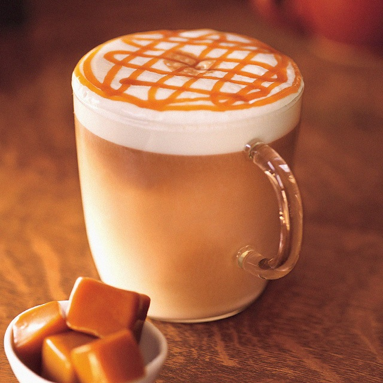
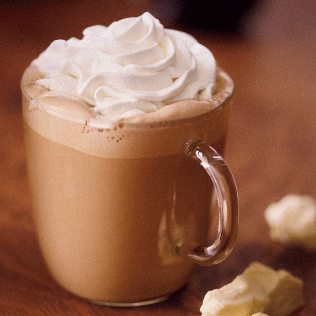
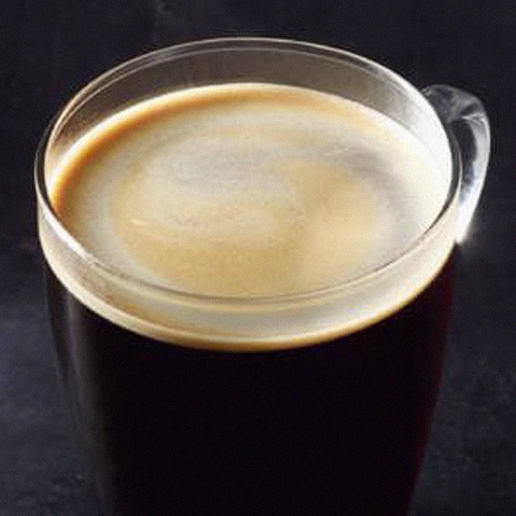
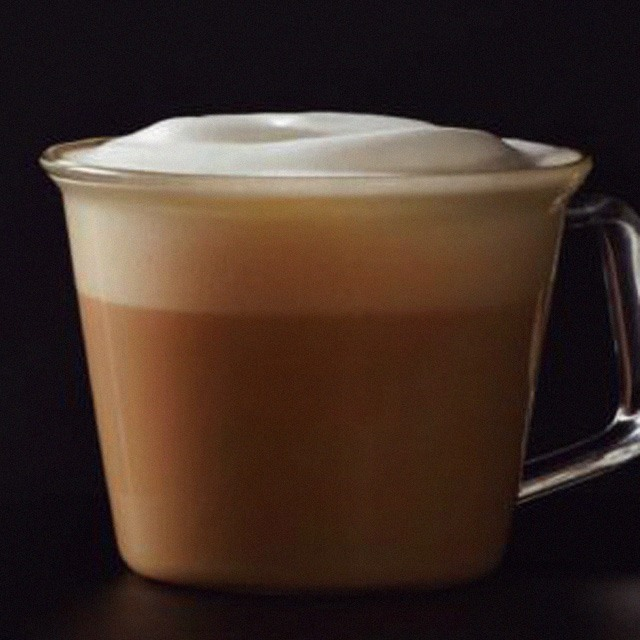

A Hot Cup of Happiness.
Welcome to Maron's Coffee Shop, a hidden gem nestled in the heart of a bustling city!
Maron's Coffee Shop is a charming and cozy haven, known for its dedication to providing exceptional coffee and a warm, welcoming atmosphere. As you step through the doors, you are greeted by the intoxicating aroma of freshly ground beans and the inviting ambiance that immediately puts you at ease.
The interior of Maron's is a delightful blend of vintage charm and modern sophistication. Exposed brick walls adorned with rustic artwork and hanging plants create a relaxed and earthy vibe. The soft lighting and comfortable seating arrangements, including plush sofas and wooden tables, invite you to settle in and stay a while.
The true stars of Maron's are their passionate and skilled baristas. Each member of the team undergoes rigorous training to ensure that every cup of coffee is crafted with precision and care. They are knowledgeable about various brewing methods and are always eager to guide customers through the menu, suggesting the perfect brew to suit individual tastes and preferences.
OUR TOP 5 BEST SELLER SINCE JANUARY 2023

Caramel Macchiato (P145/short, P155/tall, P170/grande, P185/venti). This espresso-based drink is perfect for those who like their coffee fix sweet, with freshly steamed milk blended with vanilla syrup, and topped with caramel drizzle in the signature crisscross pattern.

White Chocolate Mocha (P145/short, P155/tall, P170/grande, P185/venti). It's no secret that chocolate goes well with coffee, with the latter's dark notes boosting the sweetness of the former—common knowledge that resulted in the mocha, a drink that blends espresso, chocolate, and milk.

Caffè Americano (P110/short, P120/tall, P145/grande, P160/venti). From the name, you can already tell that Americans had something to do with the invention of this now-classic. It's popularly believed that the Americano was born from Americans based in Italy who would pour hot water over their espresso to dilute it.

Cappuccino (P120/short, P130/tall, P135/grande, P150/venti). the Cappuccino has three distinct layers: Espresso, steamed milk, and frothy foam which is thicker than that of a latte's. It's a popular myth that a Capuchin friar, Marco d'Aviano invented the drink, though there are no official historical accounts to back this.

Coffee Jelly Frappuccino (P165/tall, P180/grande, P195/venti). A bottom layer of coffee jelly, caramel Frappuccino, and whipped cream topped with caramel drizzle. It didn’t take long before this dessert-slash-drink became a best-seller.
Maron's takes pride in sourcing only the finest, sustainably grown coffee beans from around the world. From the rich and bold flavors of South American blends to the fruity and aromatic notes of African beans, their selection is carefully curated to satisfy even the most discerning coffee connoisseur. Whether you prefer a classic espresso, a velvety latte, or a refreshing cold brew, Maron's has something to tantalize your taste buds.
In addition to their exceptional coffee, Maron's also offers a delectable array of freshly baked pastries and light bites. From flaky croissants to decadent cakes and artisanal sandwiches, each treat is made in-house with love and attention to detail. The menu caters to various dietary preferences, ensuring that everyone can find something to enjoy alongside their favorite cup of coffee.
Maron's Coffee Shop is more than just a place to grab a quick caffeine fix. It's a gathering place for friends, colleagues, and creatives seeking inspiration. The soothing background music sets the perfect ambiance for conversation or quiet contemplation, making it an ideal spot for both work and relaxation. Free Wi-Fi is available to keep you connected, and the friendly staff is always ready with a smile and a listening ear.
At Maron's, community is at the heart of everything they do. The shop often hosts open mic nights, live music performances, and art exhibits, fostering a sense of connection and celebration of local talent. Whether you're seeking a moment of solitude or a place to connect with like-minded individuals, Maron's Coffee Shop is a haven where you can feel at home.
So, step into Maron's Coffee Shop, where the aroma of freshly brewed coffee and the warm embrace of a welcoming community await you. It's more than just a coffee shop—it's an experience that will leave you coming back for more, time and time again.